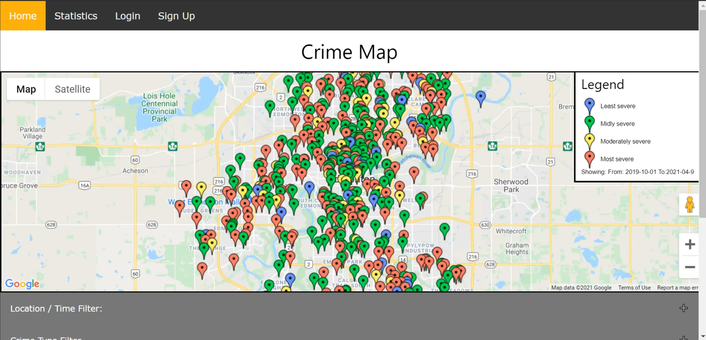
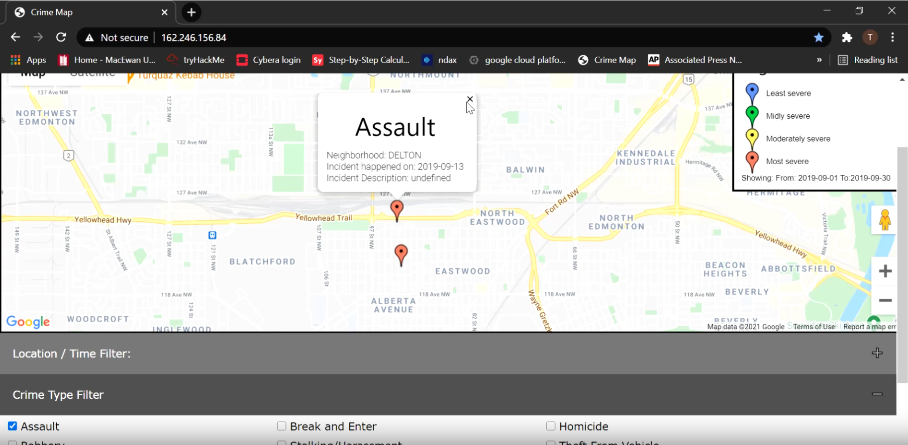
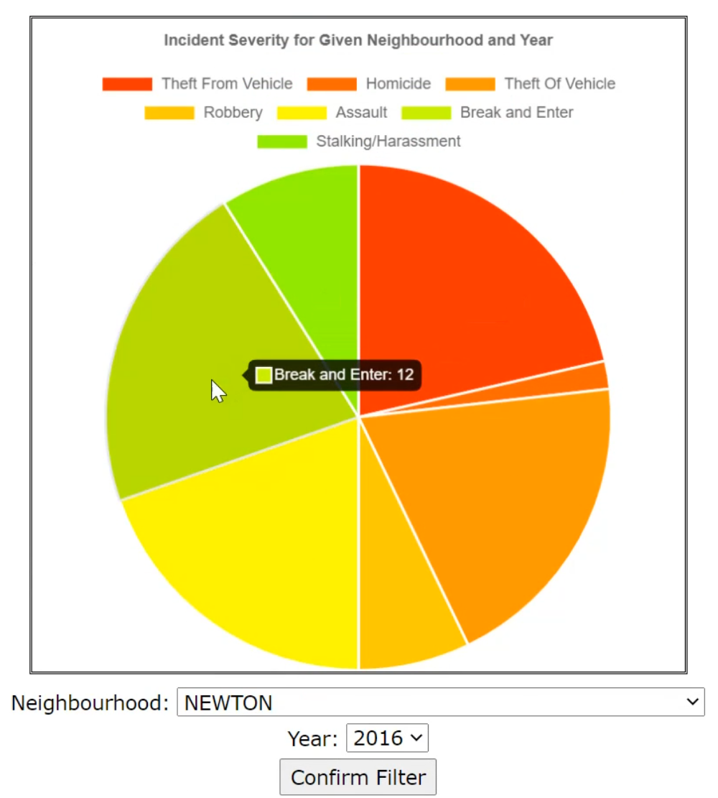
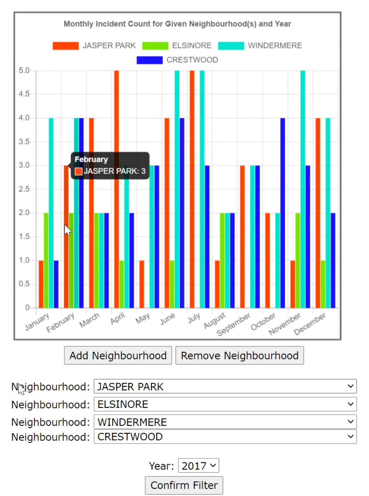
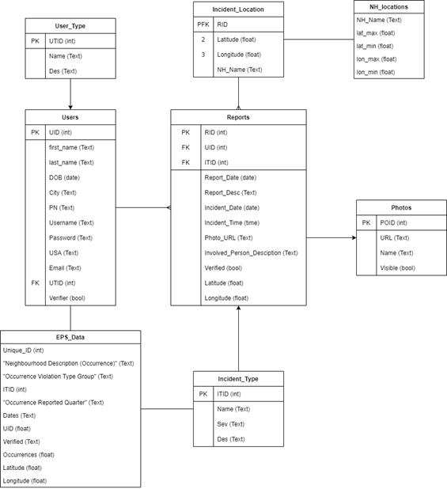

BSc Computer Science · Capstone Project
Crime Map
Making you feel safer in your city.
A full-stack web application that visualises crime data and lets users report suspicious activity in their neighbourhood.

Goal
Have you ever thought about going out, but weren't sure if it was safe to walk around a particular area at night?
So many of our friends would recite this same story over and over. We wanted to change that.
My Role
- UI Design
- Statistical Visualization
- Front-End Development
- System Design
- Back-End Development
- API Integration
- Collaboration
Why?
By making the Crime Map, we wanted to provide users with the ability to check crime occurrences and unsafe areas to help them determine if they should avoid a particular location.
We want our friends and family to feel safe.


Personal Motivations...
Our Desire to Help.
- Wanted to learn new skills, and create something that we had little-to-no experience in.
- Web Development
- Desire to create something that could be innovated on post-graduation.
- Desire to help society.
What We Accomplished...
- Developed a website that has real world applications.
- Made the website concise and user-friendly.
- Made the website more personal than the existing Edmonton Police Services website.
- Created a crime database with a personal approach (i.e. the ability to mark suspicious activity at the time of occurrence, giving people the choice to avoid the marked area).
- Provided real statistics of crime to provide visualization of severity and intensity.
- Sign-up and log-in.
- Incident reporting.

Components...
HTML, JavaScript, Apache, MySQL.
- HTML5
- CSS
- JavaScript & JQuery
- Charts.js (statistical visualization)
- Google Maps API
- PHP (database connection)
- Apache2 (server)
- Special thanks to Cybera for the public IP.
- MySQL
Dataset...
- The dataset was posted by Open Analytics and made available through the Edmonton Police Service website.
- This dataset provided the type of crime, date, and the neighbourhood the crime happened in for the years 2009–2019.
- We created a script to turn the neighbourhoods into GPS locations.
- Dataset was found at: ace.edmonton.ca/projects/visualizations/edmontons-crime-stats/ (no longer functioning)
Limitations
We recognise that allowing users to label areas as "dangerous" can lead to misinformation, bias, or stigmatisation of certain locations or groups. Our goal is to show a proof of concept, and display our desire to try and make people feel safer in their hometown.
The Future
- Make into a mobile application.
- Increase security measures.
- Add data mining functionality.
- Image processing.
Database...
Database Design: ER Diagram
Entity-Relationship Diagram showing how the tables in our database relate to one another.
